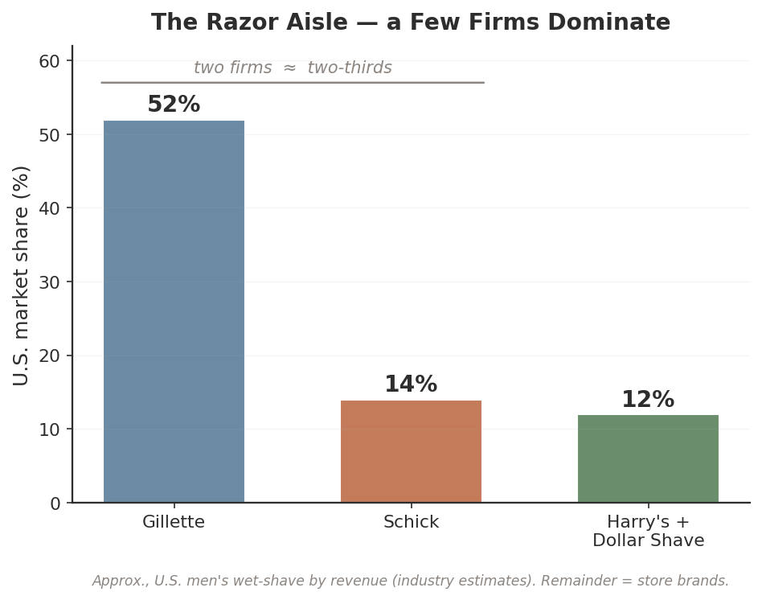
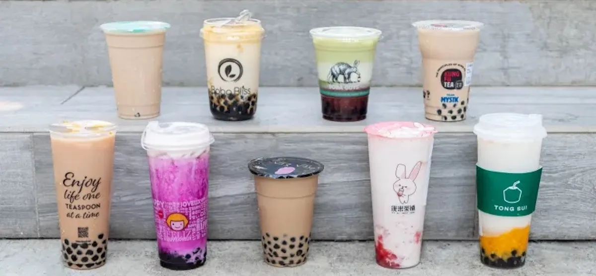
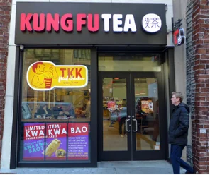
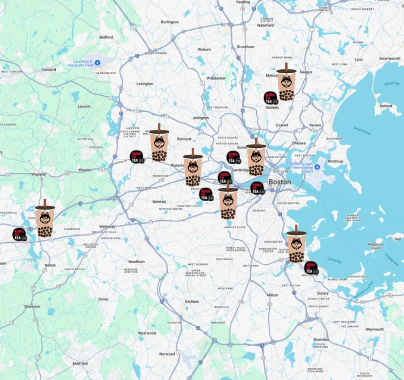
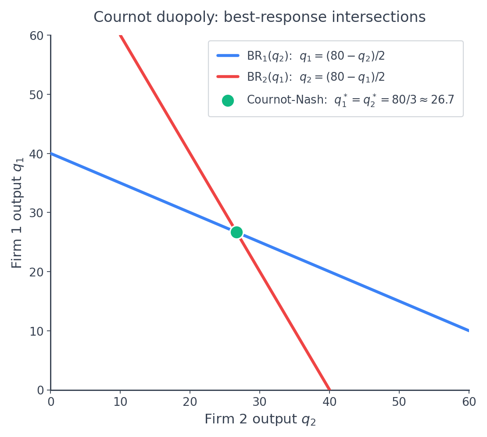
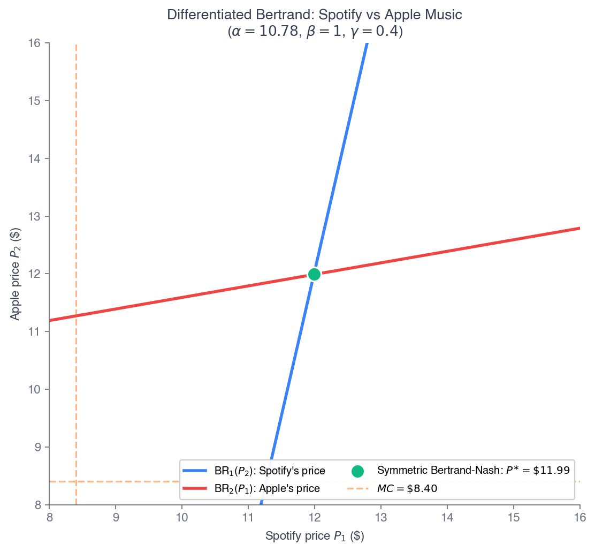
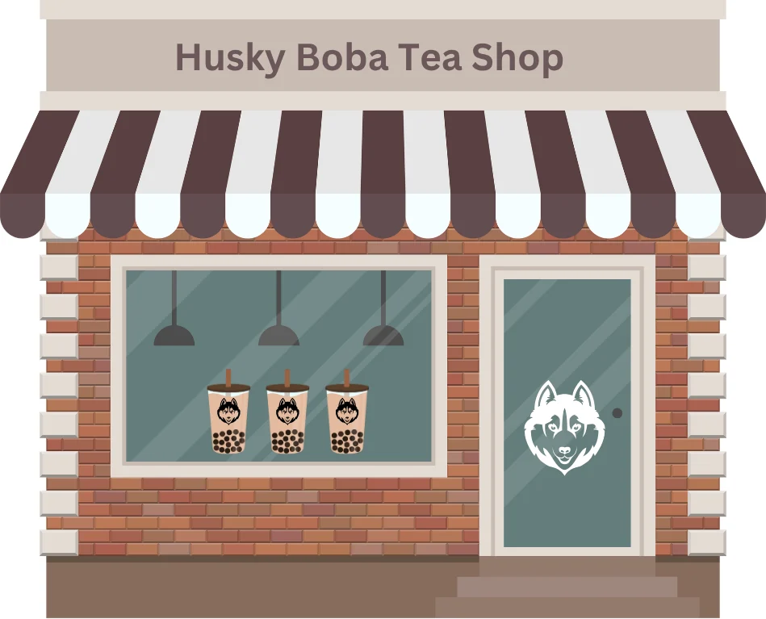
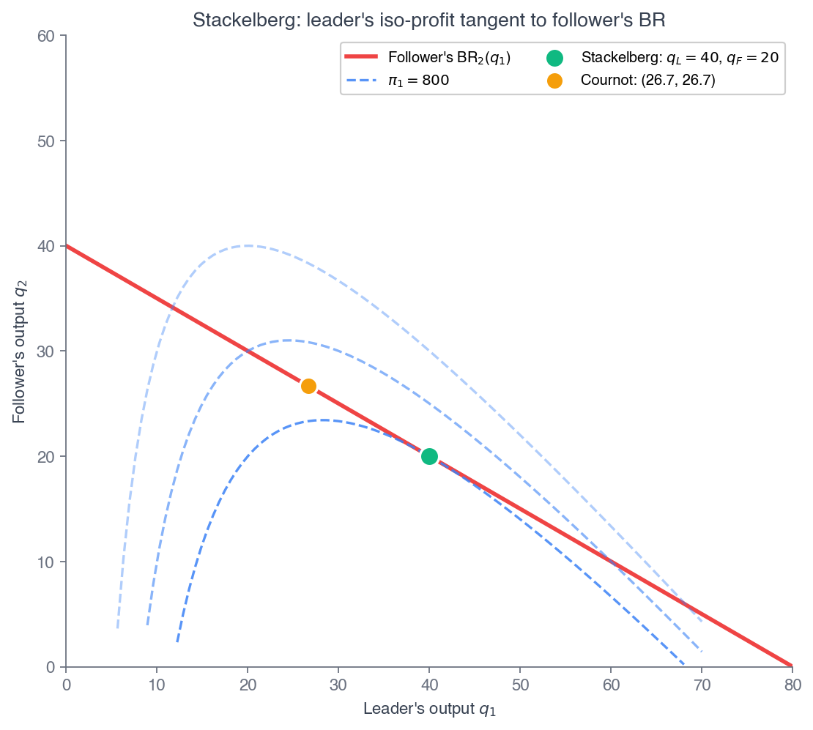
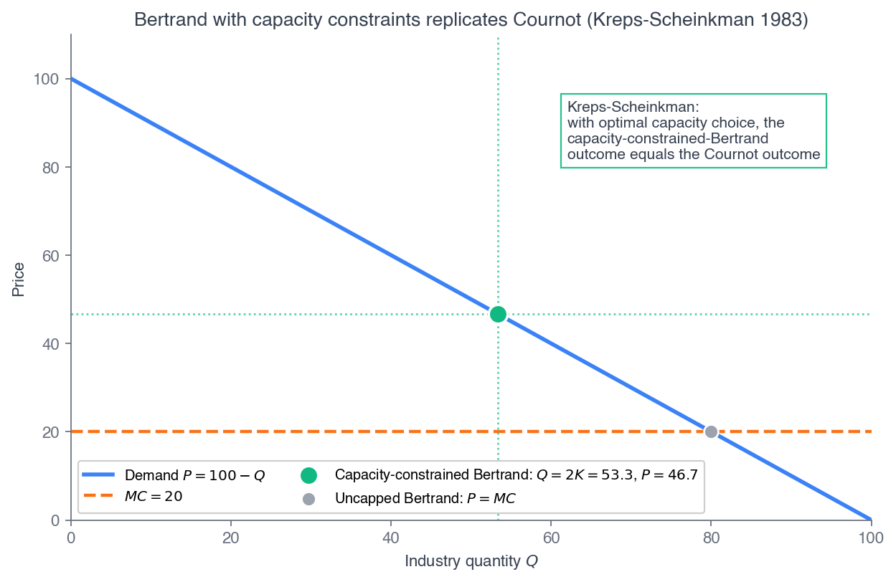

Click anywhere (or press Esc) to close
ECON 2316 • Microeconomic Theory • Chapter 13 • Part 2
Part 1 found the long-run tangency when many firms ignore each other. Now drop that assumption: a few firms whose payoffs are linked. Spotify, Apple, Amazon, and YouTube Music all sit within a dollar of each other — not at the competitive floor, not the monopoly ceiling, but the third place where your best move depends on theirs.
Dr. Richeng Piao
Department of Economics
Northeastern University
By the end of class today, you will be able to…
1
Define oligopoly, set the cartel upper bound, and explain why collusion breaks down.
2
Solve the Cournot model: best responses, the symmetric \(N\)-firm equilibrium, and the limit as \(N \to \infty\). (central result)
3
Derive the Bertrand paradox and explain the three assumptions it needs to hold.
4
Recover finite markups via differentiated-product Bertrand and calibrate to the streaming cluster.
5
Solve Stackelberg by backward induction and rank all five regimes on welfare.
Chs 11–12 — one firm
Ch 13 — a few firms
One assumption relaxes. Chapters 11–12 let one firm monopolize. Now let a few firms compete — and each firm's optimum depends on a conjecture about the others. The market structures between perfect competition and pure monopoly are exactly the interesting cases: real markets — airlines, streaming, oil, pharma — almost never sit at either textbook extreme.
Four companies sell most paid music streams in the US. Watch what happens to their prices in one year.
Spotify goes first: \$11.99 → \$12.99.
Amazon matches within weeks.
YouTube Music follows: \$10.99 → \$11.99.
Apple Music makes it four.
A few firms, and each one watches the others. Not the competitive price, not the monopoly price. That middle ground is oligopoly.
Amazon: price without Prime (\$11.99 with Prime). Apple named “rising licensing costs”, a cost every streamer shares.
The barriers from Ch 11 (Monopoly), but here they leave a handful of firms instead of one.
Economies of scale
A national airline needs planes, gates and crews in every city before it sells one ticket. Four airlines fly about 70% of US domestic travel.
Government licenses
A phone network needs spectrum licensed by the FCC. EchoStar tried to be the fourth national carrier, then sold its spectrum to AT&T for \$23 billion.
Patents & brand
Gillette spent \$750 million on the 3-blade Mach3, covered by at least 35 patents. Only Gillette blades fit a Gillette handle.
The forces that build a monopoly, stopped one step short. With a few big firms, my profit depends on your choice.
Barrier 3 · Patents & Brand
Heavy R&D & a blade arms race
Gillette spent ~\$750 million developing the 3-blade Mach3 — then kept adding blades. In 2004 The Onion mocked the race with a fake “We’re Doing Five Blades” op-ed; two years later Gillette shipped the 5-blade Fusion. Cartridges are patented — only Gillette blades fit Gillette handles.
It checks every oligopoly box:
☑ A few large firms (Gillette + Schick ≈ two-thirds)
☑ Interdependence (the blade arms race)
☑ Patents & brand (patented cartridges)
☑ Long-run profit (razor-and-blades lock-in)

An oligopoly is a market with a few firms, each big enough that its choice moves the others’ profits. So each firm picks its best move given what it expects the others to do.

The running case: Boston boba, Kung Fu Tea vs Husky Boba
Three classic models. The firms are the same; only the choice they compete on changes.
QUANTITY
Cournot
Both pick how much to make, at the same time. The total sets the price.
Boba: how many cups?
PRICE
Bertrand
Both post a price, at the same time. Buyers go to the cheaper one.
Boba: what price per cup?
TIMING
Stackelberg
One firm moves first and commits. The other sees it, then answers.
Boba: Kung Fu Tea commits first
Same demand, same \$1 cost per cup in every model. Change only the choice, and boba buyers pay a different price each time.

Kung Fu Tea is the only boba chain in Greater Boston. Every cup costs it \(MC = \$1\).
1 · Demand: \(P = 19.99 - 0.03Q\). Above \$19.99 nobody buys.
2 · Marginal revenue: \(MR = 19.99 - 0.06Q\), twice as steep.
3 · Marginal cost: \(MC = \$1\), flat.
4 · MR = MC: \(19.99 - 0.06Q = 1\), so \(Q^{*} = 316.5\) cups. Up to demand: \(P^{*} = \$10.50\).
5 · Profit: \((10.50 - 1) \times 316.5 \approx \mathbf{\$3{,}005}\).
\$3,005 is the most this market can pay. Every model that follows splits or shrinks it.
§13.3
A few firms choose quantities simultaneously — each best-responding to the others

Two chains, one Boston market.
Husky Boba sees the \$3,005 and opens shops. Same \$1 cost per cup, same customers: one demand curve for both.
Each shop decides how many cups to make. Together they set one price: \(P = 19.99 - 0.03\,(q_K + q_H)\).
Suppose Husky makes 100 cups and Kung Fu Tea keeps its 316.5:
alone
\$10.50 · \$3,005
Q = 416.5
\$7.50 · \$2,056
Husky’s cups push down the price Kung Fu Tea gets on every cup.
Cournot competition (Cournot, 1838): firms choose quantities at the same time, each taking the other’s as given. So how many cups should Kung Fu Tea make now?
1 · Residual demand: Husky’s cups come off the top. \(P = (19.99 - 0.03\,q_H) - 0.03\,q_K\).
2 · MR = MC on that slice: \(19.99 - 0.03\,q_H - 0.06\,q_K = 1\). With \(q_H = 300\): \(q_K = 166.5\).
3 · Solve for any \(q_H\): \(\;q_K = 316.5 - 0.5\,q_H\), Kung Fu Tea’s reaction curve.
4 · Read it: Husky 0 → 316.5 (monopoly) · 100 → 266.5 · 300 → 166.5
For every extra cup Husky makes, Kung Fu Tea’s best plan is to make half a cup less.
Kung Fu Tea: \(q_K = 316.5 - 0.5\,q_H\)
Husky, same costs, same steps: \(q_H = 316.5 - 0.5\,q_K\)
Solve both: \(q_K = 316.5 - 0.5(316.5 - 0.5\,q_K)\), so \(0.75\,q_K = 158.25\) and \(q_K = q_H = \mathbf{211}\).
\(Q = 422\), \(P = 19.99 - 0.03(422) = \mathbf{\$7.33}\). Profit \((7.33 - 1) \times 211 \approx \mathbf{\$1{,}336}\) each.
Cournot–Nash equilibrium: a mutual best response. Each firm’s cups are its best reply to the other’s, so neither wants to change.
Kung Fu Tea and Husky shake hands: each makes 158.25 cups, half the monopoly output. The price goes back to \$10.50, and each shop earns \$1,503 instead of \$1,336.
Will the deal hold?
60 sec to vote then ↓ for the answer
Keeping the deal is never a shop’s best reply. Each one cheats, and both end up at \$1,336, less than the deal paid. A, C and D miss this: the price does fall (C), but the extra cups more than make up for it.
Step back from the price tag on a single cup. The bigger question each chain actually faces is: how much total capacity should we put into Greater Boston? How many storefronts, how many machines, how many cups a week — that is a quantity decision, and it is made before anyone posts a price.
It is also committed in advance, which is exactly why a price cut can't instantly steal all of a rival's customers — nobody can serve a city they didn't build for. So the binding choice is production, not price.
Cournot competition — an oligopoly model in which each firm chooses its production quantity rather than its price. The market price then falls out of the total quantity all firms produce.
Assumptions — Cournot with identical goods
The model Ch 11 promised. In the same 1838 book that gave us the monopolist's \(MR = MC\), Cournot asked a harder question: what if there are two sellers? His example was two owners of mineral springs, each deciding how much water to bottle. It was the first equilibrium concept in economics — a resting point where neither party wants to move — written down 112 years before Nash generalised it (Ch 14).
Antoine Augustin Cournot
1801–1877
Assume two firms in a Cournot oligopoly:
Each firm has a constant marginal cost \(c\).
Firms 1 and 2 simultaneously choose quantities \(q_1\) and \(q_2\).
Their joint output \(Q = q_1 + q_2\) sets the one market price all firms face.
Linear demand: \(\;P = a - bQ\;\) (intercept \(a\), slope \(-b\)). For our boba market: \(a = 19.99,\; b = 0.03,\; c = \$1\).
Firm 1 can't control \(q_2\). So it treats firm 2's output as fixed and asks: what demand is left for me? Re-group market demand around \(q_1\):
\[ P = a - b(q_1 + q_2) = \underbrace{(a - b\,q_2)}_{\text{intercept}} \;-\; \underbrace{b}_{\text{slope}}\;q_1 \]
Intercept \(a - b\,q_2\): shifts down the more firm 2 produces — every unit the rival makes eats into the price firm 1 can get.
Slope \(-b\): unchanged — the same steepness as market demand.
So firm 1 faces an ordinary downward-sloping residual demand — and behaves like a monopolist on its own slice: set \(MR = MC\). Every tool from Ch 11 still works; only the intercept has moved.
On its residual demand, Coke's \(MR\) doubles the \(\color{#d81f26}{q_C}\) slope: \(\color{#d81f26}{MR_{\text{Coke}}} = (18 - 0.2\,\color{#004b93}{q_P}) - 0.4\,\color{#d81f26}{q_C}\). Set \(MR = MC = 6\):
\(18 - 0.2\,\color{#004b93}{q_P} - 0.4\,\color{#d81f26}{q_C} = 6\)
\(\color{#d81f26}{q_C} = 30 - 0.5\,\color{#004b93}{q_P}\) Coke's reaction curve
Graph Coke's best output as a reaction to Pepsi's output:
if Pepsi produces 40 → Coke's best response is 10
if Pepsi produces 20 → Coke's best response is 20
Solve both best responses at once — substitute Pepsi's into Coke's: \(\color{#d81f26}{q_C} = 30 - 0.5(30 - 0.5\,\color{#d81f26}{q_C}) \Rightarrow \color{#d81f26}{q_C} = \color{#004b93}{q_P} = \mathbf{20}\).
\(Q = 40\), \(P = \$10\)/case, profit each \(= (P-MC)\,q = \mathbf{\$80}\)k/wk.
Drag a slider to deviate from the Nash. Red/blue arrows show where each firm would move its output to raise its own profit — they vanish only at the Nash \((20,20)\).
Back to boba. Kung Fu Tea \((K)\) and Husky Boba \((H)\) compete on quantity. Market \(P = 19.99 - 0.03\,Q\) with \(Q = q_K + q_H\), each \(MC = \$1\). No shortcuts — derive both best responses, then solve them together.
Kung Fu Tea — takes \(q_H\) as given
\(\pi_K = \big(19.99 - 0.03(q_K + q_H) - 1\big)q_K\)
\(MR_K = 19.99 - 0.03\,q_H - 0.06\,q_K = 1\)
\(\Rightarrow\; \mathrm{BR}_K:\; q_K = 316.5 - 0.5\,q_H\)
Husky Boba — takes \(q_K\) as given
\(\pi_H = \big(19.99 - 0.03(q_K + q_H) - 1\big)q_H\)
\(MR_H = 19.99 - 0.03\,q_K - 0.06\,q_H = 1\)
\(\Rightarrow\; \mathrm{BR}_H:\; q_H = 316.5 - 0.5\,q_K\)
Solve the two together
Substitute \(\mathrm{BR}_H\) into \(\mathrm{BR}_K\): \(\;q_K = 316.5 - 0.5(316.5 - 0.5\,q_K) = 158.25 + 0.25\,q_K\)
\(0.75\,q_K = 158.25 \Rightarrow q_K = \mathbf{211}\), and back-substituting \(q_H = 316.5 - 0.5(211) = \mathbf{211}\) cups.
\(Q = 422 \Rightarrow P = 19.99 - 0.03(422) = \mathbf{\$7.33}\); \(\;\pi_i = (7.33 - 1)(211) \approx \mathbf{\$1{,}336}\) each; \(\;L = \tfrac{7.33-1}{7.33} \approx 0.86\).
The cartel point (158.25, 158.25) sits on neither reaction curve.
Hold Husky at 158.25: Kung Fu Tea’s best reply is 237.4 cups, \$1,690 instead of \$1,503.
Husky answers with 197.8, Kung Fu Tea answers back… they zigzag to C (211, 211), where neither wants to move.
So why try? The prize: \$1,503 vs \$1,336 each. A cartel can last only if cheaters get punished later, when the game repeats (Ch 14).
OPEC+ sets output quotas for oil producers. In early 2026 Kazakhstan kept pumping above its quota, and on May 1, 2026 the UAE left OPEC and OPEC+ to pump more.
Every member wants the high price, and every member wants to sell more at it.
Hold this puzzle. Streaming firms face implied \(|\varepsilon^{M}| = 3.33\). Symmetric four-firm Cournot predicts \(L \approx 1/(4 \cdot 3.33) = 0.075\). The actual streaming Lerner is \(\mathbf{0.300}\) — four times too big. Something is wrong with the model, not the data.
The general setup
\(N\) firms simultaneously choose \(q_i\); total \(Q = \sum q_i\); inverse demand \(P(Q)\). Firm \(i\) maximizes \(\pi_i = P(Q)q_i - C_i(q_i)\), taking rivals' outputs as fixed.
Differentiate, using \(\partial Q/\partial q_i = 1\):
\(\dfrac{\partial \pi_i}{\partial q_i} = P(Q) + q_i\,P'(Q) - C_i'(q_i) = 0\)
Rearranged: \(\underbrace{P(Q) + q_i P'(Q)}_{\text{firm } i\text{'s perceived } MR} = MC_i\). This is the Ch 11 monopolist's \(MR = MC\) — applied at firm \(i\)'s own-share marginal revenue. A Cournot firm is a monopolist over its slice of residual demand.
Why the price-impact term matters. \(q_i P'(Q)\) is scaled by the firm's own output, not total output — so bigger firms internalise more of the price drop they cause. As \(N\) grows and each \(q_i\) shrinks, that term vanishes and the firm becomes a price taker. That is the \(N \to \infty\) limit W13.3 computes.
If a few firms could perfectly coordinate, they would jointly play monopoly — pick total \(Q\) to maximize \(\pi^{M}\) and split it. With \(N\) identical firms, each makes \(q^{M}/N\) and earns \(\pi^{M}/N\). This cartel outcome is the highest profit any oligopoly can sustain. So why doesn't it always happen?
1. Antitrust.
Sherman Act §1 forbids explicit price-fixing; executives face prison.
2. Coordination cost.
With \(N \geq 3\), agreeing on each firm's quota takes repeated negotiation.
3. Cheating incentive.
Even with an agreement, each firm gains by quietly undercutting — the deep one.
Reason 3 is the deep one: even with no antitrust exposure and zero coordination cost, each firm still has a unilateral incentive to defect. For Ch 13 the cartel is an upper benchmark only — the ceiling every model below falls short of.
Linear demand \(P = a - bQ\), constant \(MC_i = c\). The FOC \(a - b\big(\sum_j q_j\big) - bq_i = c\) gives firm \(i\)'s best response to rivals' total \(Q_{-i}\):
\(\mathrm{BR}_i(Q_{-i}) = \dfrac{a - c - b\,Q_{-i}}{2b}\)
Symmetric equilibrium (\(q_i = q^{\ast}\), \(Q_{-i} = (N-1)q^{\ast}\)):
\(q^{\ast} = \dfrac{a-c}{(N+1)b}, \quad P^{\ast} = \dfrac{a + Nc}{N+1}\)
SOC: \(2P' + q_i P'' < 0\); for linear demand \(= -2b < 0\) ✓. Firm output falls in \(N\), total output rises in \(N\), price falls in \(N\).

Best responses cross at the Cournot-Nash equilibrium — the fixed point where neither firm wants to deviate.
Problem. \(N\) symmetric firms share the market. Inverse demand \(P = 100 - Q\), every firm has \(MC = 20\). Find \(q^{\ast}, Q^{\ast}, P^{\ast}, \pi^{\ast}_i, L^{\ast}\) as functions of \(N\), check the \(N \to \infty\) limit, and read off \(N = 4\) for the streaming constellation.
What you already have
From Calculus Corner 13.1, symmetric \(N\)-firm Cournot on linear demand:
\(q^{\ast} = \dfrac{a-c}{(N+1)b}, \qquad P^{\ast} = \dfrac{a + Nc}{N+1}\)
Here \(a = 100\), \(b = 1\), \(c = 20\). And the markup measure is \(L = \dfrac{P - MC}{P}\).
Your turn — fill the table
| \(N\) | \(Q^{\ast}\) | \(P^{\ast}\) | \(\pi^{\ast}_i\) | \(L^{\ast}\) |
|---|---|---|---|---|
| 1 (monopoly) | ? | ? | ? | ? |
| 2 (duopoly) | ? | ? | ? | ? |
| 4 (streaming) | ? | ? | ? | ? |
| \(\infty\) | ? | ? | ? | ? |
Start with \(q^{\ast}\), then \(Q^{\ast} = Nq^{\ast}\). Before you compute the last row — predict it. Where does price end up when \(N\) gets large?
Substituting \(a = 100, b = 1, c = 20\): \(q^{\ast} = \dfrac{80}{N+1}\), \(P^{\ast} = \dfrac{100 + 20N}{N+1}\), and since \(P^{\ast} - 20 = \dfrac{80}{N+1}\), \(L^{\ast} = \dfrac{80}{100 + 20N} = \dfrac{4}{5 + N}\).
| \(N\) | \(Q^{\ast}\) | \(P^{\ast}\) | \(\pi^{\ast}_i\) | \(L^{\ast}\) |
|---|---|---|---|---|
| 1 (mono) | 40 | \$60 | \$1,600 | 0.667 |
| 2 | 53.3 | \$46.67 | \$711 | 0.571 |
| 4 (streaming) | 64 | \$36 | \$256 | 0.444 |
| \(\infty\) | 80 | \$20 | \$0 | 0 |
Cournot-to-PC convergence. As \(N \to \infty\): each firm's share \(\to 0\), total \(Q \to 80 = Q^{PC}\), \(P \to MC\), \(L \to 0\). Monotonic in \(N\) — every extra firm moves all four numbers the same direction.
The streaming wedge. Linear-demand \(N = 4\) gives \(L = 0.444\); constant-elasticity \(N = 4\) gives \(L = 1/(4 \cdot 3.33) = 0.075\). The actual streaming \(L = 0.300\) sits between — neither homogeneous model fits. §13.5 differentiation will.
The DOJ and seven state AGs sued RealPage (Aug 2024): its YieldStar software allegedly acted as a hub-and-spoke device, pooling non-public future-pricing data from competing landlords and recommending prices that softened competition — without explicit communication.
Nov 2025 proposed consent decree: stop training on non-public competitor data. Underlying class-action settlement \$141.8M (preliminarily approved Oct 2025).
Calvano, Calzolari, Denicolò & Pastorello (2020, AER): simulated Q-learning algorithms can independently learn supracompetitive collusive strategies — with punishment phases — and no communication at all.
Heads Up 13.1 — algorithmic pricing isn't automatically collusion
“The algorithm produced high prices” does not equal “the algorithm broke antitrust law.” Pricing software has a legitimate use: estimating your own demand.
The violation requires an agreement to share non-public information among competitors, or parallel conduct plus facts suggesting coordination. Watch the data flow, not the price level. §13.5 shows supracompetitive prices are fully consistent with non-collusive differentiated-Bertrand equilibrium.
§13.4
If firms set prices instead of quantities, how few firms does it take to reach \(P = MC\)?
Same two shops, same drink, same \(P = 19.99 - 0.03Q\) and \(MC = \$1\). Now each shop posts a price, and every customer buys from the cheaper shop. A tie splits the market.
| Kung Fu Tea | Husky | Who sells | Profit |
|---|---|---|---|
| \$10.50 | \$10.50 | 158 + 158 cups | \$1,503 each |
| \$10.50 | \$10.49 | Husky, all 317 | \$3,005 vs \$0 |
| \$10.48 | \$10.49 | KFT, all 317 | \$3,005 |
| … | … | … | … |
| \$5.00 | \$5.01 | KFT, 500 | \$1,999 |
| \$2.01 | \$2.00 | Husky, 600 | \$600 |
| \$1.00 | \$1.00 | 317 + 317 | \$0 each |
A one-cent cut takes the whole market, so the cutting stops only at \(P = MC = \$1\).
An equilibrium is a pair of prices where neither shop wants to change: each price is the best reply to the other. Test the candidates one at a time.
A · Unequal, both above \$1 (KFT \$8, Husky \$6): KFT sells nothing. Cutting to \$5.99 wins the market. ✗
B · Equal, above \$1 (\$8, \$8): each sells half. One cent lower sells to everyone and nearly doubles profit. ✗
C · One at \$1 (KFT \$1, Husky \$6): KFT earns \$0 on every cup. Raising to \$5.99 earns \$2,329. ✗
D · Both at \$1: raise and you sell nothing, still \$0. Cut and you lose money on every cup. Neither wants to change. ✓
\((P_K, P_H) = (\$1, \$1)\): 633 cups, \$0 profit. Two firms reach the competitive outcome. With the same two shops, Cournot gave \$7.33.
Walmart shaves its price to $450 — still above the \(\$200\) cost, just below Target.
\(Q = \color{#1d4ed8}{q_W} + \color{#dc2626}{q_T} = Q + 0\)
The lowest price wins everyone → Walmart takes the whole market.
Each firm's best response is to just undercut the rival — until it hits \(MC\). Plot both reaction curves on one graph:
The same demand gives Lerner \(L = 0.667\) (monopoly) and \(0.444\) (Cournot \(N{=}4\)), but \(L = 0\) here — two firms reach the perfectly competitive limit.
Walmart's and Target's reaction curves cross only at \((MC, MC)\).
Two shops and \(P = MC = \$1\)? Real boba is not a dollar: a Kung Fu Milk Tea on Beacon Street lists at \$6.29. So at least one of the three assumptions fails.
1 · Identical drinks? Buyers pick Kung Fu Tea for its taste and its name, or pick the shop on their walk. A one-cent cut wins some buyers, not all, so price stays above \$1. → differentiated Bertrand, next
2 · Unlimited capacity? Say Husky can brew only 200 cups. With Husky at \$1, KFT charges \$5 and still sells 300 cups to buyers Husky cannot serve: \$1,199, not \$0. Build capacity first, then set prices, and you get the Cournot outcome. → §13.7
3 · One shot? The two shops face each other every day. Both holding \$10.50 earns \$1,503 each, every day. A one-cent cut earns about \$3,005 once, then a price war at \$0. Repeated play can hold the price up. → Ch 14
The two chains’ shops sit in different neighborhoods. A different location is a different product.
Use the paradox as a checklist: when two real firms price above cost, ask which assumption fails.
Back to boba — now on price. Kung Fu Tea \((K)\) and Husky Boba \((H)\) sell the identical drink, same market \(P = 19.99 - 0.03\,Q\), \(MC = \$1\). They post prices simultaneously; the lower price takes the whole market (ties split). Find the Bertrand-Nash.
Eliminate the candidates
(i) \(P_K > P_H > MC\): Kung Fu Tea sells nothing; cutting to \(P_H - \epsilon\) earns positive profit. ✗
(ii) \(P_K = P_H > MC\): each gets half; shading a penny lower grabs the whole market. ✗
(iii) \(P_K = P_H = MC = \$1\): raise → rival takes all (still zero); lower → loss. No profitable deviation. ✓
Solve & check
\((P_K^{\ast}, P_H^{\ast}) = (\$1, \$1)\). At \(P=\$1\): \(Q = \tfrac{19.99-1}{0.03} \approx 633\) cups, split \(q_i \approx 316\), \(\pi_i = \$0\), \(L = 0\).
Two boba shops reach the perfect-competition outcome — price at marginal cost, zero economic profit.
The boba ladder. Same market, same two shops — only the strategic variable changes: monopoly \(\$3{,}005\) → Cournot \(\$1{,}336\) each → Bertrand \(\$0\). Switching from quantity to price competition wipes out the entire monopoly rent with just two firms.
The empirical fact that few-firm markets show large markups doesn't refute Bertrand — it refutes its three assumptions in pure form. Each fails somewhere:
Homogeneous products? — Spotify, Apple, Amazon, YouTube Music aren't perfect substitutes (algorithms, exclusives, bundles, integrations). Finite substitutability \(\gamma\) gives \(P > MC\). → §13.5
Unlimited capacity? — When capacity binds, undercutting stops paying: the rival's capacity caps your residual demand (Kreps-Scheinkman 1983). The two-stage game gives the Cournot outcome. → §13.7
One shot? — In an infinitely repeated game with a patient enough discount factor, grim-trigger strategies sustain \(P > MC\) (Friedman 1971; Stigler 1964). → Ch 14
The Bertrand paradox is best read as a diagnostic: it tells you which feature of a real market generates its markup. Each of the next three units relaxes exactly one assumption and recovers a finite markup.
§13.5
Relax “homogeneous” — and the four-firm streaming cluster falls right out
A viral campaign makes some buyers prefer Kung Fu Tea. Each shop now has its own demand, and a \$1 cut adds 100 cups, only 50 of them taken from the rival:
1 · KFT: \(\pi_K = (P_K - 1)(700 - 100P_K + 50P_H)\). Set \(\partial \pi_K / \partial P_K = 800 - 200P_K + 50P_H = 0\), so \(P_K = 4 + 0.25P_H\).
2 · Husky: \(\pi_H = (P_H - 1)(450 - 100P_H + 50P_K)\). Set \(\partial \pi_H / \partial P_H = 550 - 200P_H + 50P_K = 0\), so \(P_H = 2.75 + 0.25P_K\).
3 · Solve: \(P_K = 4 + 0.25(2.75 + 0.25P_K)\) gives \(P_K = \$5\), \(P_H = \$4\). Cups 400 and 300; profit \$1,600 and \$900.
The best replies slope up: if Husky raises its price, KFT raises its price too. A small difference between the drinks lifts both prices well above \$1.
This demand system is separate from \(P = 19.99 - 0.03Q\), so these numbers stay off the welfare ladder.
Kung Fu Tea
\(\pi_K = (P_K - 1)(700 - 100P_K + 50P_H)\)
FOC: \(\dfrac{\partial \pi_K}{\partial P_K} = 800 - 200P_K + 50P_H = 0\)
\(P_K = 4 + 0.25\,P_H\)
Husky Boba
\(\pi_H = (P_H - 1)(450 - 100P_H + 50P_K)\)
FOC: \(\dfrac{\partial \pi_H}{\partial P_H} = 550 - 200P_H + 50P_K = 0\)
\(P_H = 2.75 + 0.25\,P_K\)
Substitute Husky's into Kung Fu Tea's:
\(P_K = 4 + 0.25(2.75 + 0.25P_K) \Rightarrow 0.9375\,P_K = 4.6875\)
\(\Rightarrow \mathbf{P_K = \$5},\ \ q_K = 400,\ \ \pi_K = \mathbf{\$1{,}600}\)
\(P_H = 2.75 + 0.25(5) = \$4\)
\(\Rightarrow \mathbf{P_H = \$4},\ \ q_H = 300,\ \ \pi_H = \mathbf{\$900}\)
Differentiation rescues profit. The reaction curves slope up — prices are strategic complements (the opposite of Cournot quantities). Both prices land above \(MC=\$1\), and the \(\$0\) paradox becomes \(\$1{,}600 + \$900\) of profit. A little difference is all it takes for two firms to escape \(P=MC\).
Arrows point to each shop’s best price, holding the other’s fixed. They vanish only where the best replies cross.
Linear differentiated demand: \(Q_i = \alpha - \beta P_i + \gamma P_j\), with \(0 \leq \gamma < \beta\). The cross-price coefficient \(\gamma\) is the substitutability dial.
Firm \(i\) maximizes \(\pi_i = (P_i - c)(\alpha - \beta P_i + \gamma P_j)\). FOC:
\(\alpha - \beta P_i + \gamma P_j - \beta(P_i - c) = 0\)
Best response \(P_i = (\alpha + \beta c + \gamma P_j)/(2\beta)\). Set \(P_i = P_j = P^{\ast}\):
\(P^{\ast} = \dfrac{\alpha + \beta c}{2\beta - \gamma}\)
\(\gamma \to \beta\) (near-perfect substitutes): \(P^{\ast} \to c\), the Bertrand floor. \(\gamma \to 0\) (independent): \(P^{\ast} \to (\alpha+\beta c)/2\beta\), each firm's monopoly price.

Prices are strategic complements — best responses slope up, equilibrium above \(MC\).
Given. Two symmetric differentiated streaming services (Spotify, Apple Music): demand \(q_i = \alpha - \beta P_i + \gamma P_j\) with \(\alpha = 10.784\), \(\beta = 1\), \(\gamma = 0.4\), and \(MC = c = \$8.40\). Find the equilibrium price, quantity, and the own- and cross-price elasticities.
Step 1 · Price & quantity (CC 13.3 shortcut)
Symmetric Nash: \(P^{\ast} = \dfrac{\alpha + \beta c}{2\beta - \gamma} = \dfrac{10.784 + 8.40}{2 - 0.4} = \dfrac{19.184}{1.6} = \mathbf{\$11.99}\)
Plug back: \(q^{\ast} = \alpha - (\beta - \gamma)P^{\ast} = 10.784 - 0.6(11.99) = \mathbf{3.59}\)
Step 2 · Elasticities, straight from the demand
\(P_j\) appears only in the \(+\gamma P_j\) term, so the slopes are \(\dfrac{\partial q_i}{\partial P_i} = -\beta\) and \(\dfrac{\partial q_i}{\partial P_j} = +\gamma\). Multiply each by \(\dfrac{P^{\ast}}{q^{\ast}}\):
own: \(\varepsilon_{ii} = -\beta\,\dfrac{P^{\ast}}{q^{\ast}} = -1\cdot\dfrac{11.99}{3.59} = \mathbf{-3.34}\)
cross: \(\varepsilon_{ij} = +\gamma\,\dfrac{P^{\ast}}{q^{\ast}} = +0.4\cdot\dfrac{11.99}{3.59} = \mathbf{+1.336}\) (positive → substitutes)
Takeaway. Lerner \(L = \dfrac{P^{\ast}-MC}{P^{\ast}} = \dfrac{11.99 - 8.40}{11.99} = \mathbf{0.300}\) — the same markup as the Ch 11 monopoly, produced by just two firms. Differentiation (\(\gamma/\beta = 0.4\)) gives each a residual demand nearly as steep as a monopolist's. As \(\gamma \to \beta\), \(P^{\ast} \to MC\) and \(L \to 0\) — back to the homogeneous paradox. This is the answer to the §13.3 streaming-markup puzzle.
\$1,349
Wegovy / mo (semaglutide; CV indication)
\$1,086
Zepbound / mo (tirzepatide; superior weight loss)
Real clinical differentiation sustains markups in a duopoly that would otherwise face Bertrand undercutting. Manufacturer-direct programs (Wegovy \$199–349 NovoCare; Zepbound \$299–449 Lilly Direct) act as third-degree PD. April 2026: Novo announced a \$675 Wegovy list cut effective Jan 2027 under Zepbound pressure. Q1 2026 spread: \$263.
Heads Up 13.4 — the model explains the cluster, not its symmetric prices
Symmetric diff-Bertrand does not predict every firm charges the same price. It predicts all firms price above MC by an amount set by differentiation.
Asymmetric costs or demand give asymmetric prices. The April 2026 streaming spread (Apple \$10.99 to Spotify \$12.99) is consistent with asymmetric \(MC\). The cluster width is the prediction; the (lack of) symmetry reflects firm-specific costs.
Through Q4 2025 the four firms clustered within \$1.00. Three moves in early 2026 pulled them apart.
| Individual plan | Q4 2025 | post-Apr 2026 | change |
|---|---|---|---|
| Spotify | \$11.99 | \$12.99 | +\$1.00 |
| YouTube Music | \$10.99 | \$11.99 | +\$1.00 |
| Amazon | \$11.99 | \$11.99 | held |
| Apple | \$10.99 | \$10.99 | held |
| Spread | \$1.00 | \$2.00 | — |
Spotify moved Jan 15 2026; YouTube Music Apr 10 2026 (combined Premium \$13.99 → \$15.99). Amazon standalone holds at \$11.99, \$10.99 with Prime.
\$1.00
Q4 2025 spread
\$2.00
post-Apr 2026 spread
(Apple \$10.99 ↔ Spotify \$12.99)
Differentiated Bertrand supports spreads of any size up to the monopoly bound, set by \(\gamma\). Homogeneous Bertrand cannot: it forces one price.
Two readings, same data. The widening fits either rising differentiation (falling \(\gamma\)) or Spotify's \(MC\) rising faster than rivals'. The spread alone cannot separate them — Q4 2026 data will.
§13.6
Same payoffs as Cournot — only the timing changes. One firm commits first.
Same boba market as Cournot: \(P = 19.99 - 0.03\,Q\), \(MC = \$1\), and each shop picks how many cups. One change: the timing.
Cournot: both choose at the same time

Each shop guesses the other’s cups. Result: 211 cups each, \(P = \$7.33\).
Stackelberg: Kung Fu Tea moves first
Kung Fu Tea opens its stores and hires first: cups it cannot take back. Husky sees \(q_K\), then picks \(q_H\).
1 · Husky’s reaction curve slopes down. More Kung Fu Tea cups, fewer Husky cups.
2 · So Kung Fu Tea commits to many cups, before Husky decides.
3 · Husky backs off and makes fewer cups. The leader keeps the gap.
Moving first pays only if the commitment sticks: built stores, not a promise. To solve it, start with the last mover — work backward.
1 · Husky’s reply first. It moves last, so solve it first: \(q_H = 316.5 - 0.5\,q_K\), the same reaction curve as in Cournot.
2 · Kung Fu Tea plugs that in. \(P = 19.99 - 0.03\,(q_K + 316.5 - 0.5\,q_K) = 10.495 - 0.015\,q_K\). MR = MC: \(10.495 - 0.03\,q_K = 1\), so \(q_K = 316.5\).
3 · Husky answers. \(q_H = 316.5 - 0.5\,(316.5) = 158.25\) cups, half the leader.
4 · Price. \(Q = 474.75\), so \(P = 19.99 - 0.03\,(474.75) = \$5.75\). Profit: Kung Fu Tea \$1,503, Husky \$751.
The leader makes the monopoly amount; the follower makes half. Kung Fu Tea earns \$1,503 against \$1,336 in Cournot: moving first pays.
Same Cournot payoffs — but now one firm moves first. Here's the chain that makes that an advantage:
Reaction curves slope down
When a rival produces more, your best response is to produce less.
The leader commits big, first
A large, sunk, credible quantity the follower can't undo.
The follower retreats
It slides down its curve — the leader keeps the gap it created.
That's the first-mover advantage — it works because quantities are strategic substitutes. (For Bertrand prices — strategic complements — committing first can backfire.)
Same market as before. \(P = 19.99 - 0.03\,Q\) with \(Q = \color{#dc2626}{Q_K} + \color{#2563eb}{Q_H}\), and \(MC = \$1\) for both. The only change from Cournot is who moves first.
Kung Fu Tea
The established chain. Commits \(Q_K\) first — and knows exactly how Husky will respond.
Husky Boba
The new entrant. Observes KFT's footprint, then takes the remaining share to maximize profit.
What is the Stackelberg outcome?
Solve backwards — the follower moves second, so we work it out first. K = Kung Fu Tea (leader), H = Husky Boba (follower).
Husky observes the leader's \(Q_K\), faces \(P = 19.99 - 0.03(\color{#dc2626}{Q_K} + \color{#2563eb}{Q_H})\), with \(MC = \$1\), and sets \(MR_H = MC\):
\(19.99 - 0.03\,Q_K - 0.06\,Q_H = 1\)
\(18.99 - 0.03\,Q_K = 0.06\,Q_H\)
\(Q_H^{\,BR} = 316.5 - 0.5\,Q_K\)
If KFT makes nothing, Husky plays monopolist (316.5). For every cup KFT adds, Husky cuts half a cup — the downward-sloping reaction curve.
Now Kung Fu Tea commits \(Q_K\) first — and it already knows the follower's reaction \(Q_H^{BR} = 316.5 - 0.5\,Q_K\).
Because it moves first, the leader effectively faces the whole market… but it can't just play pure monopolist:
Husky will still produce, and that extra output pushes the market price down for both. So KFT must bake the follower's response into its own plan — that's what the leader's calculation does.
Step 1 — Leader. Kung Fu Tea picks its optimal \(Q_K = \mathbf{316.5}\).
Step 2 — Follower. Husky observes it and uses its BR: \(Q_H^{BR} = 316.5 - 0.5(316.5) = \mathbf{158.25}\).
Step 3 — Price. \(Q = 316.5 + 158.25 = 474.75\); \(P = 19.99 - 0.03(474.75) = \mathbf{\$5.75}\).
The leader's big commitment forces the follower to exactly half its output. Total output is high, so price falls well below the monopoly \(\$10.50\).
Leader commits \(q_1\); follower observes and picks \(q_2\). Same \(P = a - bQ\), \(MC = c\). Solve backward.
Step 1 — follower (same as Cournot BR): \(q_2(q_1) = (a - c - bq_1)/(2b)\).
Step 2 — leader substitutes the reaction function: \(\pi_1(q_1) = \big(\tfrac{a-c}{2} - \tfrac{bq_1}{2}\big) q_1\). FOC \(\Rightarrow\)
\(q_1^{\ast} = \dfrac{a-c}{2b}, \quad q_2^{\ast} = \dfrac{a-c}{4b}, \quad \pi_1^{\ast} = 2\,\pi_2^{\ast}\)
Total \(Q^{S} = \tfrac{3(a-c)}{4b} > Q^{C}\), so \(P^{S} < P^{C}\). The leader's commitment makes the follower scale back — the first-mover advantage.

Leader rides the follower's reaction curve to its highest iso-profit contour.
Problem. AI-assistant subscriptions: \(P = 56 - 0.4\,Q\) (\(P\) in \$/month, \(Q\) in millions of subscribers), \(MC = \$8\). OpenAI (first mover) commits \(q_O\) first; Anthropic observes and chooses \(q_A\). Solve and compare to Cournot.
Solve (backward induction)
Anthropic's reaction: \(q_A = 60 - 0.5\,q_O\).
OpenAI subs it into price: \(P = 32 - 0.2\,q_O\); \(MR_O = 32 - 0.4\,q_O = 8 \Rightarrow q_O^{\ast} = 60\)M.
\(q_A^{\ast} = 30\)M, \(Q = 90\)M, \(P = \$20\)/mo, \(\pi_O = \$720\)M, \(\pi_A = \$360\)M, \(L = 0.60\).
Check vs Cournot duopoly
Cournot: \(q = 40\)M each, \(Q = 80\)M, \(P = \$24\)/mo, each \(\pi = \$640\)M, \(L = 0.667\).
Stackelberg: more output (90 > 80), lower price (\$20 < \$24), lower Lerner.
Leader earns more (\$720M > \$640M); follower less (\$360M < \$640M). Industry \$1,080M < \$1,280M.
Takeaway. The first-mover advantage pays when the leader can credibly commit before the follower moves. OpenAI launched ChatGPT (Nov 2022) and scaled capacity well ahead of rivals; Anthropic's Claude entered after and best-responds to that footprint. Consumers gain (more output, lower price than Cournot) — but the leader pulls surplus from the follower (\(\pi_O = 2\,\pi_A\)).
9.0
Saudi mb/d (early 2025, EIA)
13.6
US mb/d 2025 (fringe price-taker)
On April 5, 2026, eight core OPEC+ nations agreed to begin unwinding their 1.65 mb/d voluntary cut, starting May 2026 with a 206 kb/d step (Saudi and Russia each +62 kb/d).
When Saudi-led cuts contract supply, prices rise, US shale rigs activate, and US output scales to partly offset. Saudi knows ex ante its cuts will be partially absorbed — that is the leader anticipating the follower.
OPEC+ is empirically more Stackelberg-with-fringe than pure Cournot, because cartel members publicly commit to quotas before observing the fringe response. The leader–follower asymmetry matches the first-mover-advantage prediction.
Demand \(P = 100 - Q\); \(MC = 20\). Every regime is a point on the demand curve: green = CS, blue = profit, red = DWL. Cournot \(N=1\) is the cartel; \(N\to\infty\) reaches Bertrand = PC. Stackelberg sits below Cournot duopoly on price.
§13.7
Who wins and who loses: line up the boba regimes on one ladder
Problem. Two-stage game on \(P = 100 - Q\), \(MC = 20\). Stage 1: choose capacity \(K_i\). Stage 2: set price \(P_i\) with \(q_i \leq K_i\). Find the subgame-perfect equilibrium.
Stage 2: with capacities \((K_1, K_2)\), price clears at \(P = 100 - (K_1 + K_2)\); each firm sells its capacity.
Stage 1: firm 1 maximizes \(\pi_1 = (80 - K_1 - K_2)K_1\); FOC \(K_1 = 40 - K_2/2\) — exactly the Cournot best response.
Symmetric: \(K^{\ast} = 80/3 \approx 26.67\), \(P^{\ast} = 140/3 \approx \$46.67\), \(\pi_i \approx \$711\) — the Cournot duopoly outcome, not Bertrand.

Finite capacity caps the undercutting punishment — price competition becomes quantity competition.
Market 1 · Cournot. Kung Fu Tea and Husky pick their cups at the same time.
Market 2 · Stackelberg. Kung Fu Tea commits first; Husky sees it, then picks.
Same demand \(P = 19.99 - 0.03\,Q\), same \(MC = \$1\), same two shops.
Which market gives boba buyers the lower price, and why?
45 sec to vote then ↓ for the answer
Kung Fu Tea gains: \$1,336 → \$1,503.
Husky loses: \$1,336 → \$751.
Buyers pay \$1.58 less a cup.
Trap A: choosing at the same time is not more competitive here. The leader’s big commitment adds cups, so the price falls — to the same \$5.75 that three Cournot shops would give.
At \(P = MC = \$1\), boba creates \$6,010 a day of total surplus. Each set of rules splits the same pie among buyers, shops, and loss.
Down the ladder the price falls, buyers keep more, and the deadweight loss shrinks to zero. Profit is biggest at the top — which is why shops try to collude.
Not on this ladder: differentiated Bertrand (\$5 and \$4; profit \$1,600 and \$900) uses its own demand, so it does not share this \$6,010.
Baumol, 1982
Even a single firm prices competitively if entry is credible. With low sunk costs, a “hit-and-run” entrant disciplines the incumbent. A small-town gas station may price like a competitor.
When it breaks down
Contestability assumes low sunk costs. A frontier AI run (~$1B), hyperscale data centers, gigawatts of power — none recoverable if you fail. The desert highway’s lone station can charge monopoly prices.
The real question isn’t how concentrated a market is — it’s whether a credible challenger could actually enter. When the moat costs billions to cross, pure contestability is an illusion.
In 1998 the DOJ called Microsoft an illegal monopoly — bundling Internet Explorer with Windows to crush Netscape. Microsoft’s defense: the market is contestable — new technology could displace us at any time. Who was right?
All on the locked calibration \(P = 100 - Q\), \(MC = \$20\), \(TS^{PC} = \$3{,}200\). The chapter's payoff table.
| Regime | \(Q^{\ast}\) | \(P^{\ast}\) | Industry \(\pi\) | \(CS\) | \(TS\) | \(DWL\) | \(L\) |
|---|---|---|---|---|---|---|---|
| (a) Cartel / monopoly | 40 | \$60 | \$1,600 | \$800 | \$2,400 | \$800 | 0.667 |
| (b) Cournot duopoly | 53.3 | \$46.67 | \$1,422 | \$1,422 | \$2,844 | \$356 | 0.571 |
| (c) Stackelberg | 60 | \$40 | \$1,200 | \$1,800 | \$3,000 | \$200 | 0.500 |
| (d) Diff. Bertrand (stylized) | ~70 | ~\$30 | ~\$700 | ~\$2,450 | ~\$3,150 | ~\$50 | ~0.333 |
| (e) Bertrand homog. = PC | 80 | \$20 | \$0 | \$3,200 | \$3,200 | \$0 | 0 |
Both rankings are monotonic. Welfare: \(TS^{PC} > TS^{Bdiff} > TS^{S} > TS^{C} > TS^{M}\). Lerner: \(0 < L^{Bdiff} < L^{S} < L^{C} < L^{M}\). Moving from PC toward monopoly raises Lerner and lowers welfare in lockstep. Note \(L^{S} < L^{C}\) — Stackelberg's output expansion beats Cournot for consumers.
The Herfindahl-Hirschman Index adds up squared market shares (in %): \(\text{HHI} = \sum_i s_i^2\).
One shop: \(100^2 = 10{,}000\).
Two equal shops: \(50^2 + 50^2 = 5{,}000\).
Boba Stackelberg, \(\tfrac{2}{3}\) and \(\tfrac{1}{3}\): \(66.7^2 + 33.3^2 \approx 5{,}556\).
How regulators use it. Under the 2023 U.S. Merger Guidelines, a merger that leaves the HHI above 1,800 and raises it by more than 100 is presumed to harm competition.
| Two boba shops | Shares | HHI | Price |
|---|---|---|---|
| Cournot | 50 / 50 | 5,000 | \$7.33 |
| Stackelberg | 67 / 33 | 5,556 | \$5.75 |
| Bertrand | 50 / 50 | 5,000 | \$1 |
Concentration is not conduct. Same HHI, prices of \$7.33 and \$1. The higher HHI has a lower price than Cournot. Bertrand reaches \(P = MC\) with just two shops.
The HHI is a first screen. The models — what firms choose, and when — explain the price.
HHI = sum of squared market shares. Pick an industry to drop it on the 0–10,000 ruler, then simulate a merger of the two biggest firms — the jump is the cross-term 2×s₁×s₂.
Part 1 · Monopolistic competition (Jordan’s Airbnb)
Tangency. Entry pushes demand down until it just touches ATC: 10 nights at \$180, zero economic profit.
Excess capacity. 10 nights booked; ATC is lowest at 20.
Markup. Price \$180, marginal cost \$90: the price of variety.
Part 2 · Oligopoly: the boba ladder (\(P = 19.99 - 0.03\,Q\), \(MC = \$1\))
\$10.50
Monopoly / cartel
cartel won’t hold: each wants 237.4 cups
\$7.33
Cournot
add shops: \$4.80 at 4, \$2.73 at 10
\$5.75
Stackelberg
leader 316.5, follower 158.25
\$1
Bertrand
two shops reach P = MC
Differentiated drinks (Kung Fu Tea advertises): \$5 and \$4, a markup that lasts even with price competition.
The number of firms is not the whole story. What they choose (cups or price), when they choose, and how different the drinks are set the price.
Chapter 13 — complete
Next: Chapter 14 — Game Theory. We made the conjectures informal this chapter; now we formalize them — with the four-firm streaming constellation as the repeated-game laboratory.